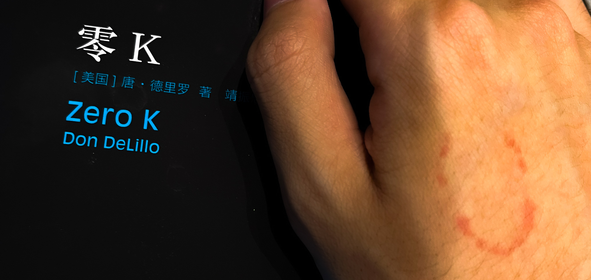
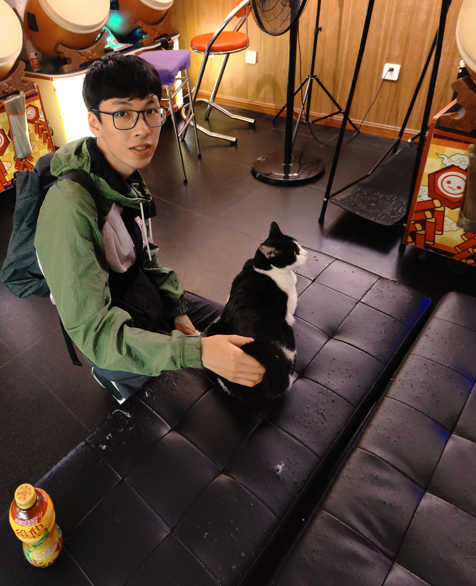
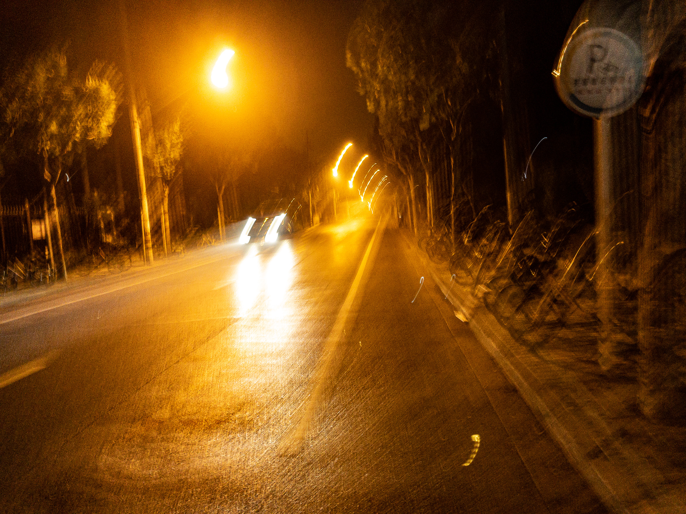

尘世帝国的片刻
你什么时候才不用那些烂俗意象呢？这几天上百词句仿佛梭突着的千年隼，轻轻爆现于更浩瀚却贫亏的自白流水中，几千秒后便遭就地掩埋了。苦苦的小工，我教你考古。我教你考古，你替我救救回忆。
是一个社会性死亡的精神病人 我是他仅有的联系的人 他类似于一直生活在一个小的时间碎片里面 清楚的记得里面所有的事情 但是没有办法进入到新的现实
25/5/23
室内设计
德里罗蜷缩在床左边沿，一个抽远又不致肢体垂落的方位。脸朝外侧深埋进臂弯哟，卧房中黄的灯光如此讨嫌；演员要避开舞台明处。你不爱我，是的我不爱你，所以你离开吧（其实你爱着我然而你担心我不爱你因此我说一句拙劣的反语你才知我心意）。你闹什么脾气，是的我的性格糟糕因此你应该走开走吧走吧你为什么还不离去（啊我还要扮演多久才能顺理成章将您挽留枕边）。德里罗从床垫弹起，扭转上身阐述自己这一段表演的精妙之处，一切意图毫无保留。她大概听懂了。夜晚的情绪，她的内心，腹有烫疤的人。在此之前的某个时刻，我们看了《日志·笔记·素描》。
那是第三回了，或者第四回，笼统一些是第五回；第三个数字我记不清。一个那么聪明又那么沾灰的人，她结交那些一个小经营者之子难得见识的——家伙。
我的爱欲结构已病入膏肓，她说。我们玩牌（我们没有）；她将海德格尔、拉康，这么些个人名揉成一团掷于我足前，我想象着鞋尖努力碾碎他们在世上的痕迹，亲吻她的笔记。把手机背过去不让我瞧。
初夏，我把飞落在纸钱上的虫子关进了有蝉蜕及其他尸体的玻璃罐。室友奇怪为甚么那个人送给她冥币。她为我买的《零K》也被我一并与鲁拜集和某本大部头塞进了她的帆布袋；记得在五十天内读完（第五周，她说，四百多页——一半左右，但我不着急了，我会和她一起在下一个月读完，那时我们下腻了国际象棋）。十五天，陌生的Airpods随你移动，该物品主人可以查看你的位置。

火烈嬉游厅
二百二十个游戏币以及三枚一元（我的地铁票费），我的头文字D驾驶技术略胜一筹。我乱按拳皇的按钮，搅拌着摇杆。逐枚将硬币投进推币机器，有时它挤落一串金属丁零，更多时候无事发生。我们玩了很久。右边的机器不触发额外奖励；左侧的似乎卡住了；中间的我们玩了太久，耗尽了储存硬币。在烈火游戏厅，一包硬中华可换三十游戏币，而如果你抗议机器故障，四十枚（老板娘抓了几把，称给我们的超过这数，然我们发觉缺少三枚）。我不吸烟，她不上瘾，且很久不抽了。我的手腕比她的细，手指也更长，而她的指甲是完美光滑的椭圆；她递给我她的表带、腰带；她把皮筋缠绕在尖长如匕刺的梳柄，她说那是用来分开发缕的。我们用这些东西伸入出币口，我们报复烈火游戏厅，我们无中生有取得筹码。我们摸好看温顺的奶牛猫（这个不花钱）。

地铁
去上海市民办平和（双语）学校有两种走法，9号线蓝天路或14号线黄杨路下车（我向她抱怨为什么不晚出生几年这样能从家坐地铁上学，她此时沉默着生气，因我在地铁上掐得她手疼（对不起，对不起，对不起，我是个不肯吃亏的小气鬼），我们在学校旁行走着迷失了。给她买了长条橡皮糖和蜜桃味三得利啤酒，换来她冷暴力结束的第一句话：“哈～好喝！”尝试寻找14号线地铁站时，降下来细雨。我们不由自主地避隐入了河边树荫下的步道。黑笨的叶片交错着，密密麻麻地遮掩了霖露也蒙住了钠灯焦黄的眼色。
从南京西路到陕西南路有两种走法，乘坐一站12号线，或者2号线转7号线转1号线。你知道么？南京西路的12号线和2号线不在一个站台。我从来没去过她在上海的住处。她牵着我的手，急急地掠过了一排街坊，却不点明哪栋楼我该细细地观察，哪扇窗我当日思夜想。
好啊，天色已晚，我该回家了，我说。她要跟着我去看我在睡城的家。我走入地铁站，绕了几个圈甩开了那时尚未摔坏脚的她。发出消息，骗她我去了另一条线路。在换乘站，我下车跟随她的光线，直到她转头后欣喜地瞧见我。但我不能忍受恶作剧的无法兑现，我要把事情搞砸。于是我再次在自动扶梯、长长走廊与人群间从她眼底退出了。这一回她没再找见。我离远至连自己也看不见她的距离，在下一班车到来之际与她一同步入。在车厢里我愈发怀疑，她是否放弃寻找我了，或者她是否并未登上地铁。我向地铁的一侧走去，接连穿过了数个车厢，终于望见了她惹眼的发色。我移动着将她保持于一位身材较高的乘客身后。她终于在耗尽耐心的那一站下车了，我匆忙着走向站台，她的伫立。这次她不言语。后来她告诉我，哭泣的时候不喜欢被他人用纸巾擦拭，而是顺其滴落。我们生气，啊我们生气。我们伤心。
你不禁疑惑我是否长记性。在出站时我看见她慢悠悠走着看消息，再一次嫉妒攻心。在天桥上我头也不回地大步走开，期待她叫我名字1，直到从楼梯回头时发现她已不见。我等候了一些时间，慢慢走向家门，又折返回地铁口几次。她在天桥上躺着，我走近发觉她正与别人通话。我确信她注意到我，又提起她的相机转身离去，希冀这能引她跟上。她没有。我在天桥下打着转，于臭水河和一排单车间透过玻璃看见她的身影。再有一分钟，我就把你的相机系在车把上，原地丢弃了。我的羸弱威胁。五分钟后我把相机塞进包里带回卧室了。家里人疑惑为什么我从上地铁至回家用了一个小时整。

来回
她说，手机电量不够了，她比我先知道地铁口关门是什么样的。她说，累了。我有极强的损失厌恶。我给她关机的手机打了无数个电话。我带了电池和相机，搪塞家人称同学遗忘了物件在我处，匆匆出了门奔向地铁口。我携着微信铃声走近了天桥下坐在楼梯边的她。她正等待路边工人返回此处以归还借来的充电器。我掏出相机给她，她问我热靴上的小狗去哪了。我失神时她笑着从身后变出了小狗。我埋在她膝下流泪。
她随我步行到楼下，她说，你这幅身材，你爹怎么这么肥胖。我说，他现在也就一百五啊，二十多岁时和我一般瘦。那时我尚未从她服用的药物中推断出一些事。离别的时候她把脸贴嵌在门上玻璃；在路灯下她看我从卧房窗口隔着防盗栏杆拿着相机，为了这几下快门她取消了一次的士。但我忘了放SD卡。半眯着眼，放心地小步跑去吧——有你有我，尚有时间；年轻的朋友不抽烟，心里只有桂皮、猪肉和料酒，蹲坐帝国门前街边路沿。